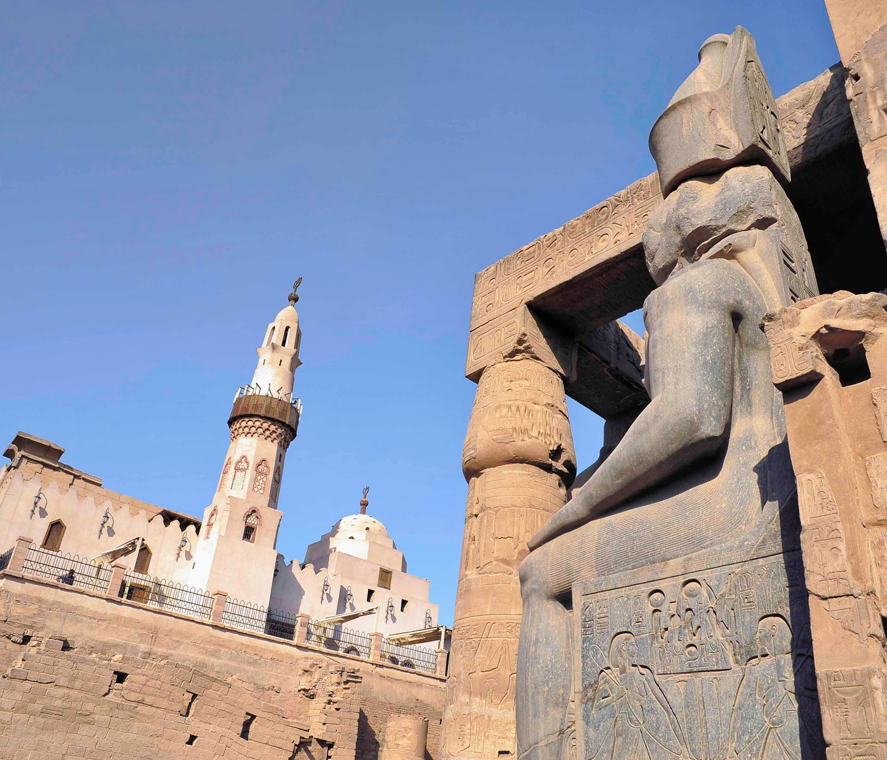

History of Egypt

Why is the History of Egypt Unique?

Egypt occupies a unique place in world history, with more than five millennia of continuous existence under organized systems of governance.
-
5,200 years of Egypt being a state.
Egypt was unified as the first state known to history by King Narmer (3200 BC) into a territorially defined political unit with central authority, bureaucratic continuity, and shared cultural and religious institutions. -
Egypt has almost always been under structured governance.
Across dynasties, kingdoms, empires, caliphates, sultanates, monarchy, and republic, Egypt has remained politically organized. -
There is no true “civilizational break,” only transitions.
Political systems, religious forms, and cultural expressions changed over time, but Egypt’s historical development remained continuous.
Ongoing Book: Rulers of the Two Lands
One of my long-term history projects is an ongoing book titled Rulers of the Two Lands. The central idea is simple but powerful: across roughly 5,200 years, we know who governed Egypt in almost every single year.
This makes Egypt historically exceptional. It means that a near-complete list can be assembled of Egypt’s rulers with virtually no major gaps in the sequence of authority.

This advantage allows us to build a framework that connects each short period of Egyptian history through the reigns of its rulers. The goal is not to tell who each ruler was, but to understand what Egypt was like during their time: the slight changes, cultural developments, and historical circumstances that shaped each period and led to major changes over time. This sequence of rulers creates a powerful tool for connecting these smaller moments and building a more complete picture of Egypt’s history, with almost no gaps.
Reuniting the History of Egypt
I am developing an ongoing concept paper titled “Reuniting the History of Egypt: A Sixteen-Era Framework Toward a Unified Chronology.”
Egypt’s history has long been divided into separate compartments, such as Ancient, Greco-Roman, Islamic, and Modern, each often studied through different disciplinary traditions as if they were independent historical experiences. This fragmentation, reinforced by colonial-era classifications and later repeated in popular and religious narratives, has limited the development of a unified and rigorous methodology for studying Egypt as one continuous historical record.
In response, this framework proposes a sixteen-era chronological model that reinterprets more than five millennia of Egyptian history within a single analytical structure. Each era, averaging roughly 350 years, is defined by distinctive forms of governance and cultural expression while remaining part of one uninterrupted historical continuum.
The Big Picture

Each era lasts on average about 351.5 years.